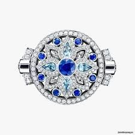
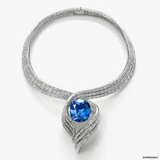
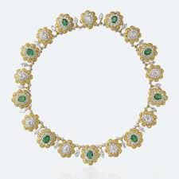
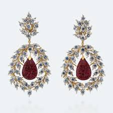
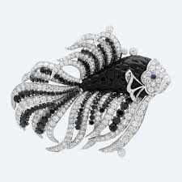
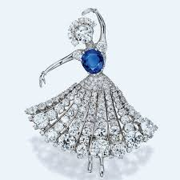
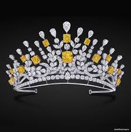
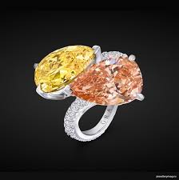

Диаманд
логин:
пароль:
|
Диаманд |
логин: пароль: |
| Каталог | Обратная связь/Контакты | Мы сотрудничае | Обработка камня |
Наша компания удовлетворит потребности клиентов. Основанная в 2021 году, компания намерена в кратчайшие сроки оставить свой след в этом секторе своей молодой и динамичной командой.Мы сотрудничаем со многими знаменитыми иностранными брендами:Harry Winston Основателем компании (1890 год) стал отец нынешнего владельца, Гарри Уинстон. И уже в середине прошлого века его украшения «согревали» шеи и руки многих кинодив. По сей день ни один проход по красной дорожке не обходится без эксклюзива от Harry Winston.Так, но одном из недавних Met Gala в брендовых бриллиантах блистала Дженифер Лопес. А на любом крупном аукционе, драгоценности Harry Winston уходят с молотка за сотни тысяч и даже миллионы долларов. Например, роскошный 9-каратный рубин, выставленный Christie’s в 2013, был продан за 3,9 миллиона долларов, став одним из 10 самых дорогих в мире рубинов.Кроме ювелирных изделий бренд занимается производством элитных наручных часов. Например, невероятно утонченные и женственные Cherry Blossom или Midnight Diamond Stalactites с бриллиантовыми дорожками на циферблате.Buccellati Бренд был основан в Милане в 1919 году. Первый владелец Buccellati — Марио Буччеллати. Сегодня делом заправляет его сын — Джанмариа Буччеллати.Украшения Buccellati пользуются невероятным успехом, поскольку они по-настоящему уникальны. Среди изделий итальянского бренда можно найти не только отдельные предметы: кольца, серьги, браслеты, но и полноценные тематические коллекции и линейки свадебных украшений.Драгоценности создаются исключительно вручную. Любимыми материалами ювелиров являются платина и золото, которые щедро инкрустированы сапфирами, зелеными изумрудами и, конечно, великолепными бриллиантами.Примечательно, что бренд экспериментирует с продуктами: на счету Buccelleti не только классические ювелирные украшения, но даже золотой чехол для смартфона за 200 тыс. долларов.Van Cleef & Arpels В список самых известных ювелирных брендов не могли не попасть Van Cleef & Arpels. Год основания бренда — 1896. Фантазия дизайнеров бренда просто поражает воображение. Уникальные коллекции ювелирных изделий пронизаны мотивами живой природы: будь то морская тема (как в коллекции Seven Seas) или цветочная (как в абсолютно неповторимых часах Maki со спрятанных циферблатом).Конечно, нельзя не упомянуть и о знаменитых драгоценных балеринах, созданных ювелирами Van Cleef & Arpels. В коллекции Peau d'Âne, вдохновленной сказкой Шарля Перо «Ослиная шкура», они особенно прекрасны.Украшения бренда представляют собой ярчайшие изделия, выполненные из платины и благородного белого золота с щедрой инкрустацией драгоценными камнями. Среди ослепительных примеров — роскошная зимняя линейка Diamond Breeze. Впрочем, по красоте не уступают и часовые произведения компании: от женственных Lady Jour des Fleurs до по истине фантастических часов-браслета Carpe Koï — Van Cleef & Arpels щепетильны в отношении каждого драгоценного камня в своих творениях.Однако классические ювелирные изделия и произведения высокого ювелирного искусства — не единственные сильные стороны французского бренда. Достаточно взглянуть на удивительный автоматон с нежнейшей феей ундиной и цветком лотоса, чтобы оценить весь масштаб творческой мысли и способностей местных мастеров.Graff Хотя ювелирный бренд Graff появился относительно недавно, в 1960 году, но это не мешает ему пользоваться огромным успехом по всему миру. И тот факт, что владелец компании Лоуренс Графф занимает 4 место среди богатейших людей, сделавших состояние на бриллиантах — отличное тому подтверждение. Девиз бренда — «роскошь, эксклюзивность и шик».Любимый камень Граффа — крупный, идеально ограненный бриллиант. Поэтому вполне ожидаемо, что в стенах его мастерских на свет родились одни из самых качественных, больших и дорогих в мире бриллиантов:Все украшения Graff создаются вручную лучшими мастерами ювелирного дела. |
|---|
Компания ©Диаманд "Все права защищены" |
|---|